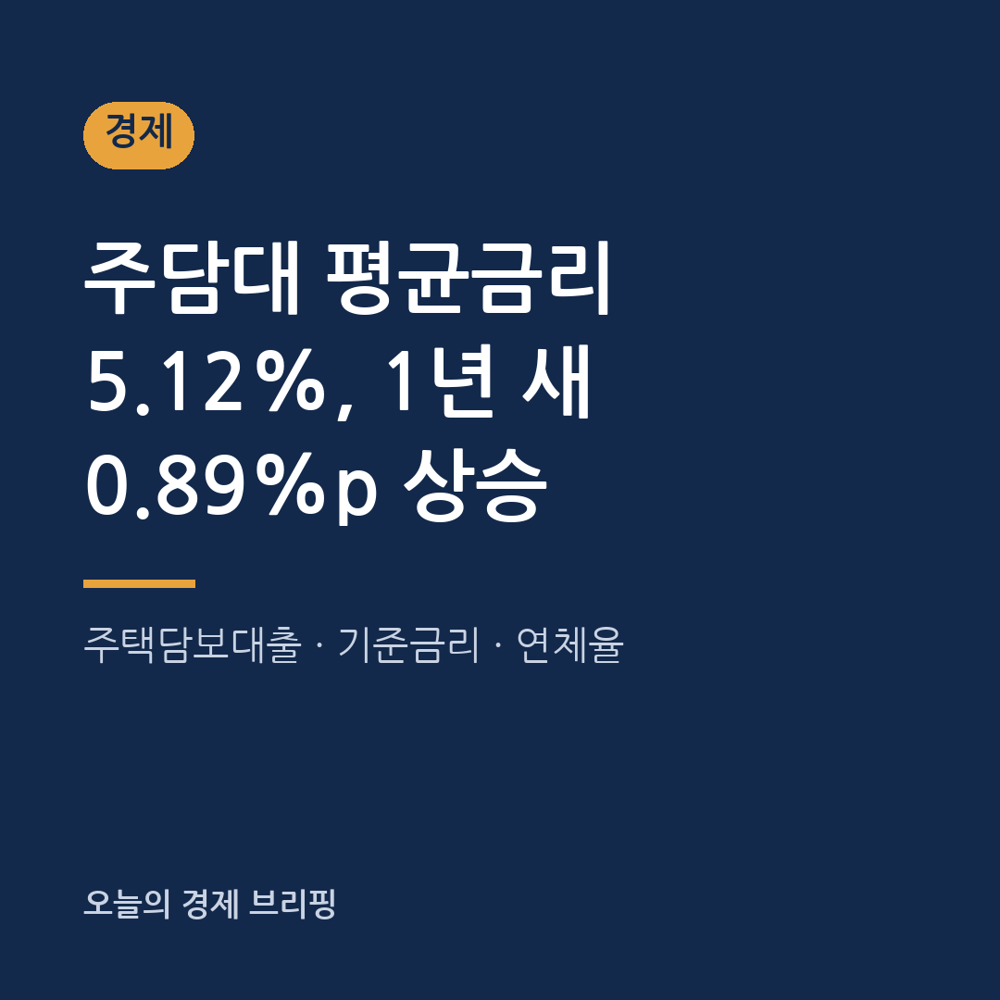
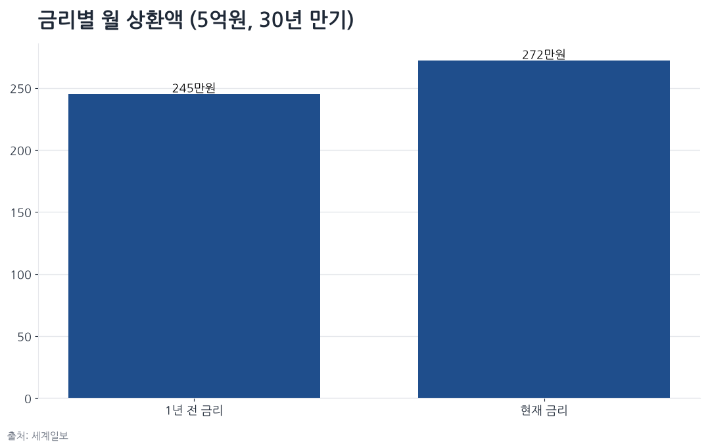

2026-11-27-1438-tistory 발행 키트 · 이 페이지는 검색에 노출되지 않습니다.
제목
카테고리
경제태그
본문 (그림·표 포함)
휴대폰 블로그 앱에서는 그림이 같이 붙지 않을 수 있어요. 그때는 [글자만 복사] 후 아래 이미지를 저장해 [그래프1]·[표1] 자리에 첨부하세요.

핵심 결론부터 정리합니다. 5대 시중은행의 신규 주택담보대출 평균 금리는 연 5.12%로, 1년 전 4.23%보다 0.89%포인트 높아졌습니다. 5억원을 30년 만기로 빌릴 경우 월 상환액은 약 27만원 늘어나는 수준입니다.
한편 보험사 대출은 잔액이 줄었는데도 연체율이 오르는 흐름을 보였습니다. 두 소식을 묶어 금리 상승기의 차입 부담을 살펴봅니다.
▶ 배경: 올해 세 번째 기준금리 인상
한국은행은 11월 26일 기준금리(한국은행이 정하는 정책금리)를 연 3.25%로 0.25%포인트 인상했습니다. 올해 들어 세 번째 인상입니다.
기준금리는 은행의 조달 비용과 대출금리에 영향을 주기 때문에, 인상이 이어지면 신규 대출에 붙는 금리도 높아지는 경향이 있습니다.
▶ 핵심 내용: 주담대 금리 수치
보도에 따르면 5대 은행의 신규 주담대 평균 금리는 연 5.12%입니다. 예금은행 전체 평균은 연 4.98%로 집계되었고, 이는 14년 7개월 만의 최고 수준이라고 전해졌습니다.
주담대 평균 금리 현황
| 구분 | 수치 |
|---|---|
| 5대 은행 신규 주담대 (현재) | 연 5.12% |
| 5대 은행 신규 주담대 (1년 전) | 연 4.23% |
| 예금은행 전체 신규 주담대 | 연 4.98% |
출처: 세계일보
▶ 영향: 월 상환액 변화 계산
원리금균등상환 방식으로 5억원을 30년간 갚는다고 가정하면, 1년 전 금리 기준으로는 월 약 245만원, 현재 금리 기준으로는 월 약 272만원입니다. 차이는 월 약 27만원이며, 연간으로는 300만원을 넘는 규모입니다.

위 수치는 신규 대출 평균을 가정한 예시입니다. 기존 차주의 부담은 금리 방식(변동·고정)과 금리 재산정 시점에 따라 달라집니다.
▶ 함께 볼 지표: 보험사 연체율
보험회사의 가계·기업 대출 잔액은 3분기에 2.1조원 감소했습니다. 그럼에도 연체율은 1.27%로 두 분기 연속 상승했습니다.
중소기업 대출의 부실채권비율(회수가 어려워진 대출의 비중)은 2%에 가까운 수준으로 알려졌습니다. 대출 규모와 별개로 상환 능력이 약한 차주의 부담이 드러나는 지표로 읽힙니다.
보험사 대출 지표 (3분기)
| 항목 | 내용 |
|---|---|
| 대출 잔액 | 2.1조원 감소 |
| 연체율 | 1.27% (두 분기 연속 상승) |
| 중소기업 부실채권비율 | 2%에 근접 |
출처: 매일경제
▶ 확인할 점
첫째, 보유 대출의 금리 유형과 다음 금리 변경일입니다. 둘째, 상환 방식이나 만기 조정이 가능한지에 대한 금융기관 상담 여부입니다.
셋째, 신규 대출을 계획 중이라면 복수 금융기관의 우대금리 조건과 중도상환 수수료를 비교하는 것이 필요합니다.
▶ 정리
1. 5대 은행 신규 주담대 평균 금리는 연 5.12%로 1년 새 0.89%포인트 올랐습니다.
2. 5억원·30년 기준 월 상환액은 약 245만원에서 약 272만원으로 늘어납니다.
3. 보험사 대출은 잔액이 줄었지만 연체율이 1.27%로 두 분기째 상승했습니다.
이미지 (개별 복사·저장)
출처 (본문 맨 아래에 붙여넣기 권장)
- 세계일보, 정년 연장 노사 합의 불발…5대 은행 주담대 금리 5% 넘어 [오후 뉴스 3컷], https://www.segye.com/newsView/20261127508331 - 매일경제, 가계·기업대출 다 줄었는데…보험사 연체율 왜 오르나, https://www.mk.co.kr/news/economy/12220087